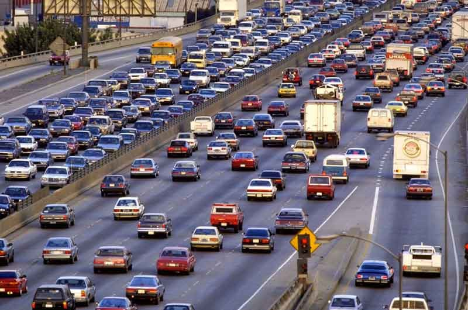

Позвонить
Позвонить
Области применения квантовых компьютеров
-
Улучшенный поток трафика
Пробки на дорогах являются одной из основных проблем в городах, которые могут возникнуть в любое время. Люди обычно просыпаются рано утром, чтобы прийти в офис раньше, чтобы избежать пробок. Но они все равно застряли и много раз опаздывали в офис. Google анализирует пробки и заторы, чтобы предложить своим пользователям самый быстрый и понятный путь к месту назначения. Volkswagen пытается снизить количество пробок и заторов, контролируя и оптимизируя поток трафика. В 2017 году они экспериментировали на компьютере квантового отжига, чтобы найти оптимальные маршруты для ряда автомобилей. Они успешно показали метод, оптимизировав маршруты из 10 000 автомобилей на пекинских дорогах. Они утверждают, что процесс оптимизации в компьютере квантового отжига намного быстрее, чем в классическом компьютере.
